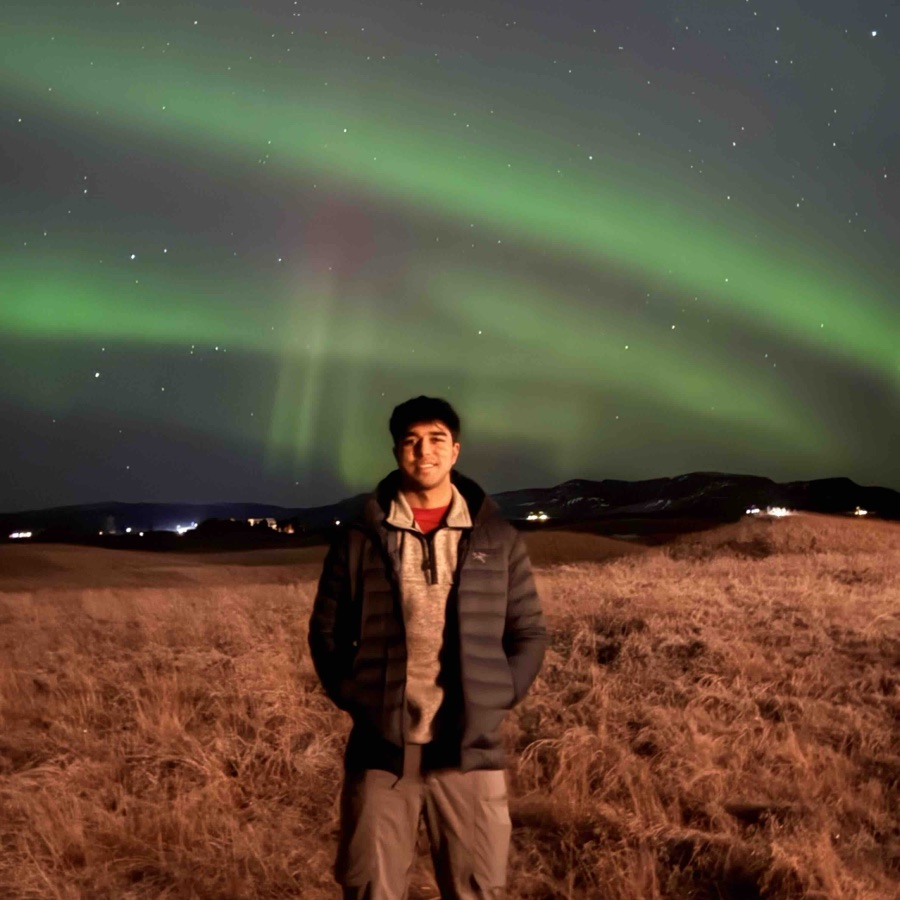
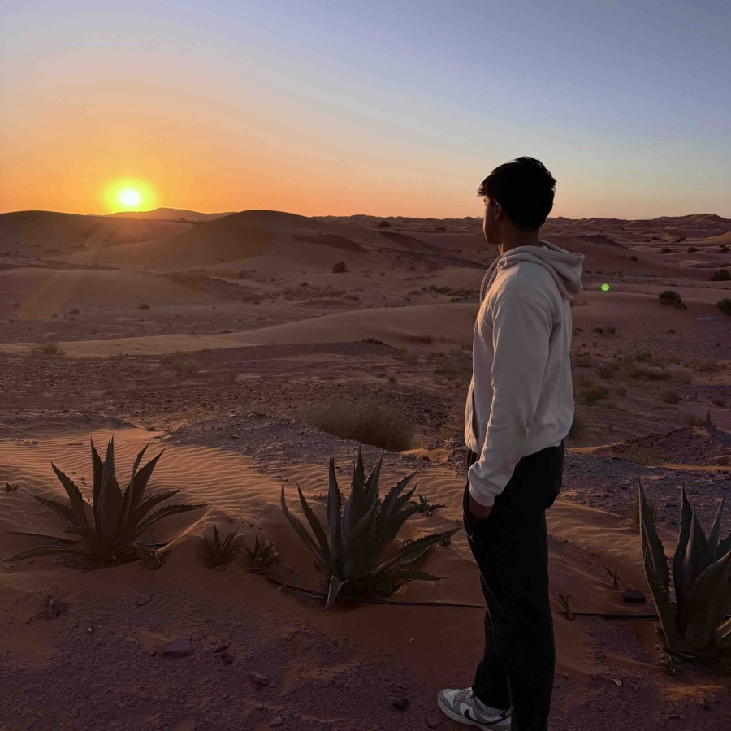
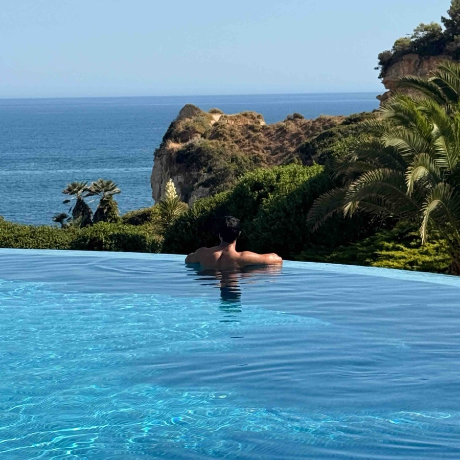
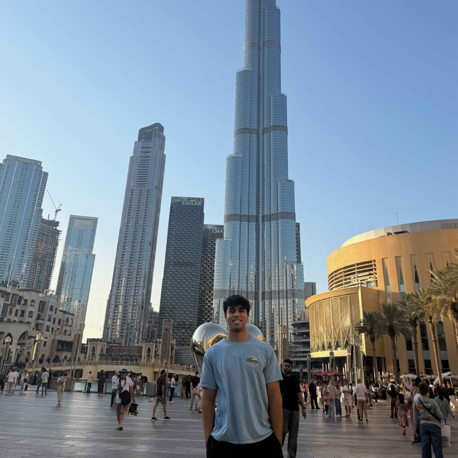
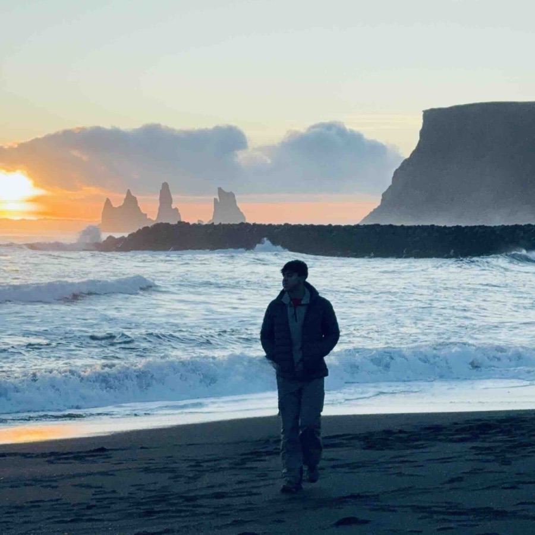
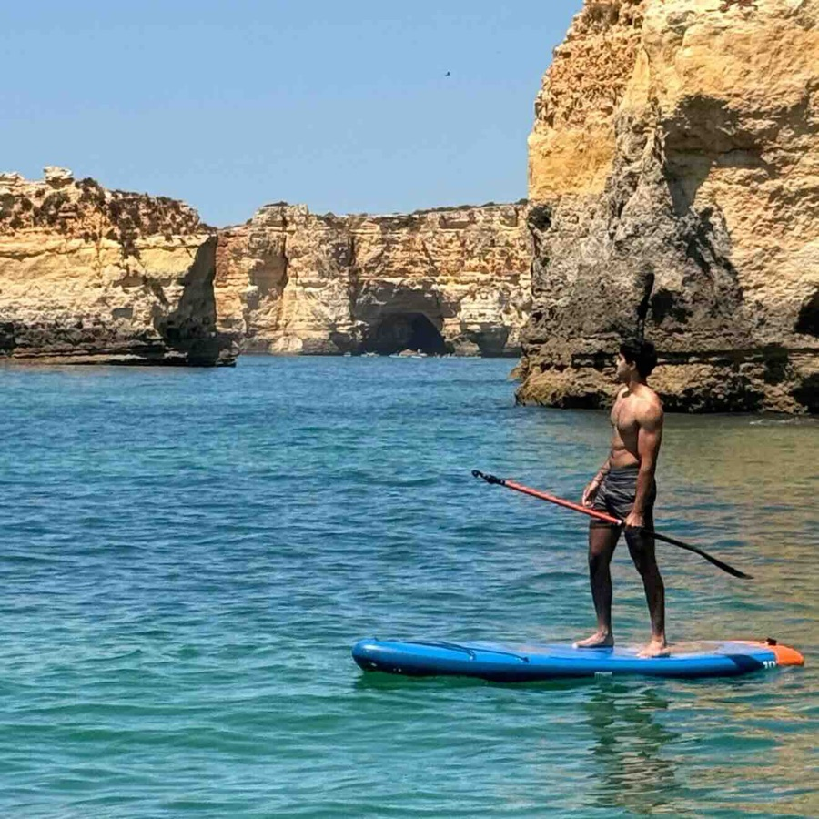
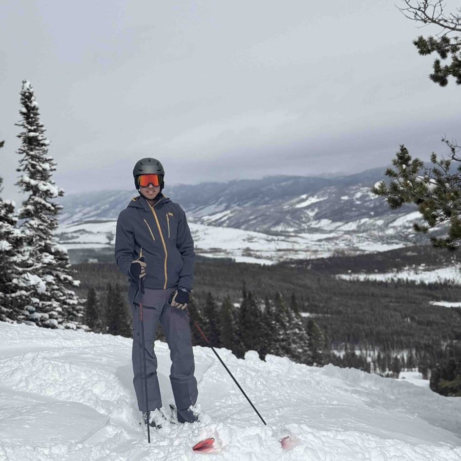

I'm Nayan, a student at Penn studying AI and Statistics.
Developing learned compression for Rubin Observatory transient alerts with Dr. Mathew Madhavacheril at Penn.
Writing fast inference kernels for open-source models using cuTile.
Extending my prior asteroid research with self-supervised transformer pretraining.
Vision-language models and GPU kernels at Relay.
Evaluating seed-stage B2B software at Cofounders Capital.
The first CNN to accurately classify Near-Earth Asteroids into the Bus-DeMeo taxonomy, first-author with MIT, presented at AAS 245.
A multilingual RAG assistant guiding refugees through resettlement, built for my nonprofit Refugee Assist.
U-Nets to replace ray-tracing simulation for 5G site planning at Duke.
Measuring the electrical properties of doped polymers for AI-optimized chips at NC State.
Outside of work, I surf, play golf, and watch football (go Panthers!)